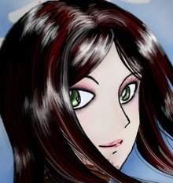

Blood Death Knight

About the author
This guide is written by Troxism, a prominent theorycrafter and guide writer for Blood Death Knights and the main tank for Duality. Troxism has been raiding on his Death Knight since Mists of Pandaria launched, and started playing the game in Burning Crusade.
Death Knight IRC
Server: irc.coldfront.net
Channel: #acherus
Changelog
June 21st 2015: Updated for Patch 6.2
-Added 6.2 summary.
-Changed Stat Weights (Basic + Adv).
-Rewrote a lot of little things in that section to be more up to date.
-Updated recommmended food to 125 versions and gems to 75 versions.
-Added HFC BiS List(s)
-Slightly edited end of multistrike/crit/haste sections.
-Slightly edited talent recommendations.
-Defile section slightly edited + added note on how to maximize it’s utility with Fel Burn.
-Rewrote BoS section completely.
-Removed BoS from CM section.
-Rewrote Trinket section.
March 25 2015: Updated formatting
Blood Rotation
The overall goal of your rotation: you want to prevent resources from capping as much as you can; you have 3 rune pairs and runic power to worry about, and Blood Charge if you use Blood Tap.
Here is a rough order of priority:
1: Use Death Strike on Frost and Unholy Runes if the second pair is recharged or is going to recharge in the next GCD (i.e. you are about to overcap runes). Do not spend your last pair of F/U runes as you should always hold a Death Strike in reserve for an emergency heal.
2: Use Blood Boil if the second Blood Rune is recharged or is recharging in the next GCD (i.e. you are about to overcap runes). Soul Reaper takes priority on your Blood runes below 35%, unless you have 6+ targets to AoE with Blood Boil. Note that if you primarily care about DPS, Soul Reaper pretty much takes priority over everything else as its damage per cast on single target is only matched by Defile.
3: Apply diseases if they aren’t up.
4: Use Crimson Scourge procs on Defile or Death and Decay. Use it on Blood Boil if those are on cooldown.
5: Use Death Coil to spend excess Runic Power. Try to keep it below 40-50, as anything above that risks randomly overcapping as you can instantly gain 50 RP from Multistrike Procs + Death Strike. Note that when AoEing, you will often be GCD locked due to using Blood Boil a lot (which is a 1 rune spell, meaning it exhausts runes slower than Death Strike), so on heavy AoE it’s usually better to just Blood Boil/Death Strike and let yourself RP cap if you don’t have the spare globals.
6: Spend your other Blood Rune, unless you are planning to save it for Rune Tap.
7: Spend the rest of your RP, unless you are banking for Breath of Sindragosa usage.
8: Use Plague Leech, making sure you have at least two fully depleted runes before using it, and while Outbreak is off cooldown in order to quickly reapply the diseases again. If you have Glyph of Outbreak, you can pretty much Plague Leech at any time. If there are 2+ targets, you don’t need to Outbreak since you can just Blood Boil to re-spread the diseases back.
What I mean by ‘spend the rest of your RP/other Blood rune’ is basically because they are lower down on the priority list, you only do this if no other resources are in danger of capping soon; i.e. you have wait time. As mentioned, you do not spend your remaining F/U pair in this way, as that is banked for an emergency Death Strike.
On the topic of Death Runes: you have to treat them like the rune type they have ‘taken over’, in the sense that you never want a pair of runes to be both up. However the ability you spend them on will vary. You use Death Runes on Blood Boil for AoE damage or Death Strike for mitigation/single target damage (post hotfix, Death Strike does noticeably more single target per rune than Blood Boil)
Army of the Dead usage
This ability should only be used pre-pull, about 8-6 seconds beforehand so your runes have time to be up. Its damage is too low relative to its resource usage to really make it worth using during combat.
How to Pull
Start by using Taunt (Dark Command) into Blood Boil when you get in range, into Death Strike. If you are not close enough to Blood Boil the target before taunt wears off, then pull using Taunt into Icy Touch intoPlague Strike into Blood Boil or Death Strike as needed. Afterwards in both cases, you apply diseases. Putting up diseases is NOT a high priority right on the pull, so it is okay to have it wait 2-3 GCDs. They don’t do that much damage right away, and their only utility is proccing Crimson Scourge which is not critical to have on the pull.
You SHOULD NOT pull with Outbreak, glyphed or not, as it gives you 0 threat until diseases tick 3 seconds later, and this will not hold threat off anything stronger than a stiff breeze. The only time pulling with Outbreak is fine is if you know for sure nobody will do anything to the mobs for at least 1 GCD.
Death Strike Usage
In Warlords of Draenor, Death Strike timing is similar to MoP, but slightly changed. Basically, in MoP, the Blood Shield amount is greater than the raw healing amount from Death Strike. In WoD, this is reversed; the heal is the larger portion of the total effect. This means greater emphasis needs to be placed on avoiding overhealing with Death Strike. Therefore, you want to only Death Strike when it will NOT overheal (obviously, as the rotation above says, you should Death Strike anyways if you are resource capping, since not doing so would just be a waste at that point regardless of overhealing).
Summary:
1: Don’t overheal with Death Strike; try to use it at sufficiently low HP. Below 75%-65% is usually a good number, but it varies heavily with how much Resolve, AP and HP you have.
2: Use it anytime you are in danger of dying; either critically low HP or when you know burst damage is coming and your health/cooldowns are not enough. This is always going to be a judgement call, but this is basically what you save the Death Strikes for.
3: Even if neither of the above are true, use Death Strike if you would otherwise cap on Frost/Unholy runes by having both pairs be off cooldown.
Rune Tap Usage
Rune Tap is the new form of ‘active mitigation’ added in Warlords of Draenor for Blood DK. It has been reworked from a 10% max HP heal to a 40% damage reduction for 3 seconds (up to 2 charges, 40 second cooldown, 30 seconds with the leveling perk). At a glance, this means you should preferably use it right before a large spike of damage to maximize the damage reduced by it.
A good way to look at Rune Tap is like a reverse Death Strike; you typically want to Death Strike right after a spike, but you want to Rune Tap right before a spike instead. This means you may need to learn a somewhat different playstyle if you are used to the reactive play of Death Knights.
Another way to look at it is like another cooldown that is available much more often, but has a very short duration. It can also be used as a ‘bridge’ between Death Strikes; if you are worried about dipping low before your next Death Strike is up on a high sustained damage encounter, but the cooldown prevents this from being a sustainable long term.
Using this ability correctly is HEAVILY encounter and situation dependent; you have to figure out when the spike damage will be coming and proactively use this ability.
The biggest issue with using this spell is the fact that you need to have a Blood Rune to use it. Always make sure that if you plan to use this at a specific time, that you remember to bank the required rune in advance.
Cooldown Usage
Quite simply, there are two reasons to use tanking cooldowns; to prevent burst damage (i.e. prevent a fast death), or to close the gap between healing taken and damage taken to prevent a slow death that is looming. Another way to put it is proactive cooldown usage to prevent burst deaths vs reactive cooldown usage when you notice you are starting to dip low to sustained damage, although it doesn’t always perfectly line up like this (there are cases you proactively CD to prevent high sustained damage, like solo tanking or challenge mode pulls).
Generally you don’t have to worry about burst damage on difficulties below Mythic, unless you are already dipping low before it comes. So in most content, your cooldown usage will be primarily reactive, when you notice your health dropping over time to let healing catch up.
You never want to overuse cooldowns; you want to use just enough to prevent burst damage from killing you/lower damage taken below healing taken. Overusing cooldowns means you don’t have them later in the fight, the next time you need them. Also, when choosing between cooldowns, you want to use the shorter cooldown ones first, as they will be back up quicker in the event that you end up needing them again; you want to use abilities like Bone Shield/Vampiric Blood often, while Icebound Fortitude should be saved for when it is most needed.
Honestly for most players, you will typically hit cooldowns due to ‘random’ events that cause your health to dip as a way to recover; a healer having to move due to a mechanic, a misplay in your rotation etc. In this case you want to just use one at a time, unless you really think more are needed. For example if you are doing 5 mans, and you start dipping low, you might pop Vampiric Blood. Next time it happens, maybe Bone Shield. Maybe if you had magical damage coming in, you would use Anti-Magic Shell instead. Learning this type of ‘cooldown weaving’ is very useful for non-bursty content.
External CD Usage
On the topic of cooldown weaving, during really high sustained damage, you may want to have a cooldown up the entire time (There were many cases in MoP 25 Heroic where I would stay cooldowned for over a minute straight to avoid the risk of randomly dying). External cooldowns are MASSIVELY helpful here as your own cooldowns will not be enough. This is also where the whole idea of not overusing cooldowns comes in; you don’t want to just use everything all at once because then you have nothing left for later.
A good example is something like solo tanking 25H Thok in 5.4; You might use a cd rotation like this:
0-2 Panic Nothing
3 Panic: Ironbark
4 Panic: Hand of Sacrifice + Vampiric Blood
5 Panic: Hand of Sacrifice + Vigilance + Refresh Bone Shield
6 Panic: Hand of Sacrifice + Vigilance + Dancing Rune Weapon
7 Panic: Hand of Sacrifice + Pain Suppression
8 Panic: Icebound Fortitude + Ironbark (back up by this point)
This is probably the most extreme example of cooldown weaving + stacking, but I think it illustrates well what I mean about planning ahead as much as possible and not wasting too much too early.
I recommend Exorsus Raid Tools for tracking external CDs (needs some configuration, but it is pretty solid all around).
Comments on Specific Cooldown Abilities:
Bone Shield expires much more rapidly now (1 second ICD on consuming charges instead of 2), so it is not always advisable to use it on cooldown anymore. You should still use it pre-pull, but during the fight I would consider using it more like Vamp Blood; situationally, rather than just using it on CD as was best in MoP. Generally better used against sustained damage rather than spike damage if you have a choice, but only because it tends to last longer.
Vampiric Blood hasn’t really changed; it is a good EHP boost before a spike, and can assist you in healing yourself. With the T17 2p, the effective cooldown on this ability becomes fairly low, so if you have it, you should try to use it shortly after it comes off cooldown (although obviously don’t just completely waste it trying to ‘get rid of it’). Unglyphed, amazing vs spike damage, and in general very good versus sustained damage, especially with the T17 4p. Never glyph this spell, as its main utility as a cooldown is the maximum health increase, not the healing increase.
Dancing Rune Weapon is used similarly to live; mostly as a DPS cooldown. Its duration is much shorter however, and its damage has been reduced to about 33% of your damage for no real reason. Having said that, even if used as a DPS cooldown, use it as part of your cooldown ‘weaving'; if you have DRW up, don’t use other CDs with it unless needed. This ability is useless against spike damage, but good at reducing sustained damage intake.
Icebound Fortitude is much shorter in duration now, but is still used the same; for very high periods of damage or in emergency situations where you need more breathing room. Great against both burst and sustained damage. Glyph of Icebound Fortitude is amazing against burst damage, but inefficient vs sustained damage.
Anti-Magic Shell‘s runic power gain aspect has been massively nerfed in WoD. While it can still give a decent amount of runic power if used at the right time, it will no longer overflow your runic power bar constantly, and weak magical dots will no longer give significant amounts of runic power. Therefore, AMS soaking has become massively dumbed down; you should primarily use AMS to soak heavy magical spike damage (where you will still gain a decent amount of RP) instead of trying to use it on cooldown on every little puddle/dot to gain free RP.
Empower Rune Weapon is used to either get emergency Death Strikes if you are out of runes and need to DS immediately, or to help extend the duration of Breath of Sindragosa. Due to its long CD, it’s not generally that impactful, but if used well can save your life in a punch.
Talents Cheat Sheet
Level 56: Plague Leech
Level 57: Purgatory
Anti-Magic Zone can be a good alternative if you want more utility.
Lichborne can act as an awkward version of Death Pact via Death Coiling yourself.
Level 58: Death’s Advance
Other talents can be worthwhile situationally.
Level 60: Blood Tap or Runic Corruption if you have a lot of trouble using BT.
Level 75: Death Pact
Level 90: Situational for the encounter
Level 100: Defile or for more advanced players on single target/2 target with enough multistrike*, Breath of Sindragosa
*What ‘enough multistrike’ for BoS means heavily depends on how well you play BoS and how good the fight is for it (number of mobs hitting you for parry haste is a huge factor), but a rough number would be around 2500+ Multistrike rating. Ideally you would have 3000+, but more is always better for BoS.
Talents Advanced
Level 56: Plaguebearer, Plague Leech, Unholy Blight
Basically, Plaguebearer and Unholy Blight do nothing for Blood unless you take Necrotic Plague. Unholy Blight can have minor use as a second Outbreak, but if you aren’t using Necrotic Plague, you should not have problems spreading and maintaining diseases since Blood Boil does all of that for you as long as you disease at least one target manually.
Plague Leech on the other hand provides you 2 ‘free’ runes every 25 seconds. Now the issue is you don’t want to leave your diseases off the target (lose DPS and Crimson Scourge procs, which are basically +20% healing to your next DS if used on BB) for more than a few seconds, so you have to reapply them quickly. Doing this via Icy Touch + Plague Strike is a waste, because you effectively end up spending the runes you just gained for nearly no gain at all.
What this means is you should only use Plague Leech if you have Outbreak avaliable, either because it is off cooldown, or because you glyphed it to have no cooldown (but cost 30 RP). The latter is generally slightly better but a bit harder to use. This is because in WoD, Glyph of Outbreak will still generate 2 Blood Charges just likeDeath Coil for the same cost. This means you only lose the Death Coil damage (and you get way more damage out of 2 runes than 1 Death Coil), and the small amount of Shadow of Death stack (which got nerfed and you’ll only be losing about 1% max HP in practice due to how it works as described previously).
Effectively, you can cast Plague Leech every 25 seconds if you have Glyph of Outbreak, and every 60 seconds if you don’t (because you are waiting on the Outbreak CD). Realistically, Plague Leech won’t be used exactly on cooldown; you need a ‘gap’ in your rotation to spend 2 globals to get the runes, and you obviously need to actually have depleted runes.
Something else to keep in mind: Plague Leech will only refresh fully depleted runes, and if you only have one fully depleted rune when you cast it, it will only give you one. So make sure you have two fully depleted runes before you cast this ability. Also, when AoEing, keep in mind you can basically just Plague Leech and let your next Blood Boil re spread the diseases back, without having to use Outbreak.
If you are using Plague Leech with Necrotic Plague: You want to use PL in the last 1-5 seconds of NP’s duration, because you would have been reapplying it soon anyways. Since NP can be reapplied ‘manually’ with only one rune, Glyph of Outbreak is less important, but still a good idea. Note that using PL + NP is superior to using Plaguebearer or Unholy Blight + NP in both DPS and survivability, as long as you don’t Plague Leech a fresh NP; wait till it was about to expire anyways. This can be very cumbersome to do, since sometimes you are busy with other things when NP is expiring, and this is a big reason why it can be annoying to use.
Level 57: Lichborne, Anti-Magic Zone, Purgatory
Lichborne: This talent is supposed to only give 10% Leech/make you Fear/Charm/Sleep immune, however currently it still maintains the functionality of making you undead and able to Death Coil yourself (this is not intended AFAIK). This means it has decent utility as a self-healing tool as you can activate it and Death Coil yourself at a slight DPS loss. Using Dancing Rune Weapon at the same time can increase the healing, but because of the nerfs to its AP coefficient, and the fact that the Rune Weapon doesn’t benefit from your Resolve, it isn’t that effective at doing this.
You can use this macro to automatically Lichborne and Death Coil yourself with the same button, without having to target yourself:
#showtooltip Lichborne
/cast !Lichborne;
/cast [target=player] Death Coil
Anti-Magic Zone: This talent is a small utility (20% magic damage reduction for 3 seconds and requiring everyone to stack can hardly be called ‘great’), but can be good on some encounters. It is up to you to decide if you need Purgatory for the encounter, or if AMZ would actually be more beneficial.
Purgatory: This is a great default talent, but is primarily useful only on hard hitting encounters where you can be killed quickly from high HP. It has not changed much from live, although Death Pact is less effective at getting you out of it due to the healing absorb leaving you more vulnerable.
Level 58: Death’s Advance, Chilblains, Asphyxiate
Death’s Advance is the default choice for this tier, being the only reason DK ‘mobility’ even exists. However on specific encounters/dungeons and Challenge Modes it can be beneficial to take Death’s Advance to kite, orAsphyxiate as a stun. Again, this is a choice made based on the situation. Something to note is that in MoP Death’s Advance was multiplicative with all other speed buffs; in WoD it is additive, meaning it is slightly nerfed from MoP.
Level 60: Blood Tap, Runic Empowerment, Runic Corruption
I’m going to be honest, if you can handle using it, BT is far and away the best choice. For why you should use it, I HIGHLY recommend reading my article about it:
http://wayback.archive.org/web/20141110174748/http://sentrytotem.com/news/classes/dk/why-you-should-use-blood-tap
That article is for MoP; in WoD Rune Tap being an important AM tool is yet another reason why BT is superior since it can more reliably provide an on-demand Rune Tap. Defile also favors BT if you choose to cast it outside of Crimson Scourge procs; if you are using RC, using an Unholy Rune on Defile will ‘desync’ your runes, which will be a huge problem for you. So if you use RC with Defile, I recommend only casting it with Crimson Scourge procs.
Necrotic Plague also favors BT if you choose to not use Glyph of Outbreak; since it only takes a single rune to refresh, you will have the same orphan rune issue as with Defile using it with RC. For Breath of Sindragosathere is no special preference either way, although BT can be more reliable for maintaining the breath for longer.
The only reason I don’t tell absolutely everyone to use BT is that a lot of people screw up managing the resources of Death Knights properly without capping; managing Blood Charges in addition to that can be way too much to handle for some people. So if you honestly struggle with using it, you have two choices; keep practicing until it is second nature, or you can use Runic Corruption instead as the easier choice. Ultimately using BT badly is worse than using RC properly, and it is much easier to play RC properly.
For reference on what I mean by ‘playing them correctly’, here is my mini-guide to using the rune regeneration talents: http://wayback.archive.org/web/20141204150943/http://sentrytotem.com/news/classes/dk/guide-using-level-75-talents
While it was written for MoP, pretty much everything should still apply to WoD.
Level 75: Death Pact, Death Siphon, Conversion
Death Pact is the ‘staple’ choice, however unlike in MoP it creates a healing absorb on you for half the amount healed. Basically it heals you for 50% of your max HP, then gives a 25% max HP healing absorb. Effectively it heals you only 25% of max HP now, however it provides more ‘burst’ healing. Honestly even with relatively higher HP pools, this talent feels worse than on live, however unless I find a way to make Death Siphon work, this will be the choice taken by 100% of Blood Death Knights.
On paper, Death Siphon looks strong, but it does not proc Blood Shield via Mastery, so it actually ends up healing less in total than Death Strike in most cases. Its healing scales with Multistrike and Crit unlike Death Strike, and it still slightly scales with the AP bonus from Mastery. It MIGHT be usable in some weird no Mastery high MS/Crit build, but the problem is that even then it probably won’t be significantly better, and it absolutely kills your DPS to use this talent as its damage is pathetic.
Conversion costs a ridiculous 30 RP per 2% HP for Blood, basically meaning you shouldn’t use it in most situations. While you do get rune regeneration talent procs from the RP spent, you do not get Shadow of Death procs, and the healing is very minor for the cost. Obviously you also lose significant DPS from not Death Coiling. In theory this talent might be useful in later tiers if we can stack enough Multistrike, but in the current tier it isn’t really worth it. Consider that even with the absorb, Death Pact heals 25% of your max HP, or 12.5 Conversion ticks, or 375 Runic Power worth of Conversion healing. It is not generally going to be worth it to pay 375 Runic Power for a REALLY slow Death Pact heal.
Having said that, the talent is still usable in its current state; you will definitely lose DPS, and it’s a pain to manage turning it on and off all the time (making it basically not usable for most people), but you do end up doing more HPS than without it. But you lose the burst heal of Death Pact.
Level 90: Gorefiend’s Grasp, Remorseless Winter, Desecrated Ground
There isn’t much to say about these talents; they are mostly unchanged from MoP (Desecrated Ground now removes roots as well). You pick the one that is best for your situation, or if none of them are essential for the situation, the one you like the most.
Level 100: Necrotic Plague, Defile, Breath of Sindragosa
Necrotic Plague
Honestly Necrotic Plague is STILL undertuned even after getting a 20% damage buff (Patch 6.1). It isn’t a DPS loss anymore at least, but it still has a hard time competing with Defile. While I generally scoff at math this basic (as it ignores the realities of boss fights), I think it will illustrate my point well:
Let us assume the best case (actually impossible, but I’ll talk about that later) scenario: NP has 100% uptime and is always at 15 stacks. It deals 3.2% AP per stack and ticks every 2 seconds, so it does 3.2%*15/2 = 24.0% of your AP in damage every second per target in this case.
In order to be better then Defile, it needs to do more damage than Blood Plague + Frost Fever + Defile combined, since it replaces the two diseases, and is being compared as a talent choice against Defile. So how much damage does all that do?
Blood Plague and Frost Fever deal 23.64% of your AP per tick, and tick every 3 seconds. Defile deals 33% of your AP per tick, and ticks 10 times over its duration, with a 30 second cooldown. Since we assumed the ideal case for Necrotic Plague, assume the ideal case here too: 100% BP/FF uptime, and Defile cast perfectly on CD every 30 seconds with all of its ticks hitting the target(s). This means you deal 23.64%*2/3 + 33%*10/30 = 26.76% AP per second in damage per target.
Now, this seems like NP is about the same, but the issue is that the ‘ideal’ case for it is actually impossible for Blood; you cannot have 100% uptime on it with 15 stacks the whole time. Your uptime on it will always be slightly lower than BP/FF since it falls off on it’s own unlike those diseases, and while Blood can apply extra stacks with BB, realistically only about 35-50% of the duration of the disease will be spent at 15 stacks (depends how much you BB). And if you use Plague Leech (which you should even with NP talented), you will have to take off your 15 stack during its last few ticks, further causing it to do less damage. So in reality NP does a lot less than this math indicates.
Now, on AoE NP’s problems are reduced. You Blood Boil way more on AoE, meaning 15 stacks are reached much faster. Plague Leeching one target on AOE is less costly, and can pretty much be done at any time freely, since the plague will automatically spread back to the target. Also, even the application cost of the disease every 30 seconds can be somewhat circumvented: if you allow it to naturally spread it will spread to the target at the same duration/stack count, but if you BB before the next tick, it will spread a fresh plague to the target, meaning you can ‘bounce’ NP back and forth forever if you BB at the right times between 2+ targets, and never have to manually reapply it, which helps it a lot as well. However sometimes this bug doesn’t work (or I guess doesn’t bug), so it’s not reliable from what I can see. So you still want to have Glyph of Outbreak ready in the event that it falls off.
Note on Plaguebearer/Unholy Blight with NP: Basically you would already never use NP on ST anyways, and on AoE the 2 Death Runes every 25 seconds from Plague Leech are completely insane since you can use them to Blood Boil, so Plaguebearer and Unholy Blight will simply never match up. Unholy Blight might be useful if it had a 30 second CD for Blood on AoE with NP, but 90 seconds is just too long. Plaguebearer only affects 1 target, so will never be good until NP is good on ST.
Note on the RP gains of NP: The talent sucks on ST, and on AoE you tend to already be GCD locked, and more importantly, Death Coil is a terrible spell for AoE so even if you aren’t GCD locked already, casting a few more Death Coils on AoE makes little difference (mostly done for the Blood Charges to BB more with). Also, in 6.2 with HFC gear, you pretty much WILL be GCD locked, so the extra RP from NP is completely irrelevant.
Summary: Honestly this talent (still) just sucks. It’s closer now, but it’s not quite there and I still don’t recommend it for anything.
Defile
The reason I recommend Defile in this tier is because it is the easiest to use and overall very strong. It provides a solid DPS and mitigation benefit and if you are used to the MoP rotation, you will already be used to using Death and Decay on Crimson Scourge procs, so using Defile will come naturally.
On the topic of procs; you can either use this talent on CD regardless of if you have a Crimson Scourge proc, or you can wait for the proc before you use it. The difference is that if you only use it only via Crimson Scourge, you can cast more Death Strikes (since Defile consumes DS runes normally). However you will be casting this spell less often due to having to wait for a proc after it comes off cooldown, so you will lose a small amount of DPS. In addition, the 10% damage reduction having a higher uptime can help offset the loss of Death Strikes. The difference either way is small; you gain a little DPS using it on CD, you gain a little mitigation waiting for procs. If you are running Runic Corruption, I highly recommend waiting for Crimson Scourge procs before using Defile to avoid orphan runes. However honestly whichever way you choose to do this, doesn’t really matter that much.
Also note that if the boss/enemies will not stay in the Defile for it’s full duration (for example if you need to move them often for some reason), it is a good idea to use a different talent instead. Or at least in theory. In practice you don’t really have a choice on talents, as BoS is gated by fight mechanics and multistrike, and NP is worse even if you miss half your Defile ticks.
Patch 6.2 Note: Every tick of Defile adds a stack of Fel Burn from Empty Drinking Horn. Currently DnD does not do the same, so Defile has extra synergy with this trinket. Since the burn lasts 15 seconds, and stacks gained earlier deal more damage, you want to cast Defile exactly as the stack resets (ie 15 seconds left), every second reset (since Defile has a 30 sec cd) to maximize the damage gains. Make sure you try to bank runes in advance so you don’t push your Defile cast back.
Breath of Sindragosa
This is the other talent I recommend in this tier, however it’s not quite as clear cut as that. Defile is a well rounded talent; Breath of Sindragosa is a Single Target DPS/Cleave focused talent. It’s mitigation value is highly situational; it heals you for 10% of the spell damage done by the target while the Mark of Sindragosa debuff from it is active. Note that this is ‘spell’ damage, not magical. This means for example a physical spell (like Butcher Cleave) will still heal you. But on the flip side, magical damage autoattacks (like Imperator adds) do not count. Also note that this healing scales with Resolve (so at the 240% resolve cap, you heal for 34% of the damage done by the target).
Note that some mechanics do not work with Mark of Sindragosa; for example if the boss casts a spell on the ‘environment’ and the environment deals damage to players, you do not get healed (example: Demolition on Blackhand). In practice this pretty much means what works and doesn’t is completely arbitrary and you just need to test it case by case to see what does and doesn’t work. On the flip side, ‘shared health’ mechanics appear to proc the mark, meaning you get healed for the entire damage your raid is doing to the boss (example: Hans’gar and Fransok). So basically the strength of Mark of Sindragosa is completely dependant on the details of the fight. Sometimes it will heal you for ridiculous amounts (for example if the Boss AoEs your whole 20 man raid, you get healed for 200-700% of the damage done based on Resolve), sometimes it will do literally nothing.
The way the ‘deals reduced damage to secondary targets’ works: it does 100% of the listed damage to the ‘primary target’ (not sure how that is determined, but I think just by proximity), and then another 100%/number of targets to every additional target. So you deal 100% damage to one target, total 150% to two (100% to the main target, 50% to the other target), 166% to three targets (33% to each of the non main targets) and so on. While the total damage does slowly increase with more targets, it will never reach even 200% total (it will get infinitely close with an infinite number of targets however). This means this talent is actually more like a cleave then a true AoE; it’s damage does not really scale very much with more targets.
The above however does not mean that more enemies isn’t a good thing for BoS; the more enemies there are actively meleeing you, the more parries you will get, which speeds up your autoattack and therefore runic power generation. This means Breath of Sindragosa is MUCH easier to maintain if there are 2+ enemies meleeing you constantly, while if you only have one mob meleeing you that stops to cast a lot, or none at all, it is very difficult to generate enough RP.
Patch 6.2: Due to the increase in cost to 20/s, BoS is MUCH MUCH MUCH harder to maintain for any decent length of time. This means you need about 2500+ Multistrike for it to start becoming worthwhile, and even then you should keep in mind that if you have to range the boss a lot or get knocked away/stunned, your breath uptime will suffer. On the flip side, as mentioned above, the more mobs there are meleeing you, the easier it is to keep Breath up. And obviously, good AMS soaks will help a lot too if the fight allows for them.
Because of all this, in 6.2, BoS is HIGHLY fight dependant; you basically need good conditions for it to be effective. You also may need your other tank to help you out by for example doing some mechanics for you so you don’t have to range the boss during your breath, or have him let you tank as many mobs as possible to help you keep breath up. Either way, 100% uptimes aren’t really possible in 6.2, so your goal is between 20-30%, depending on gear. Multistrike is ESSENTIAL; as said above, you need about 2500+, and the more the better. So if you plan to use BoS, you have to STACK multistrike to the exclusion of anything else. This is why I have a 2nd BiS gear list for BoS specifically that stacks as much multistrike as possible. Sockets are also very important for extra 75 MS gems.
Note that while there are trinkets that give Multistrike (Vial of Convulsive Shadows, Rumbling Pebble), at least currently in 6.2, the Burn/Cleave trinkets are still better with BoS then either of those because they do a lot of damage.
*Note the 2500+ MS number is an estimate. In reality, the specifics of the encounter affect this MASSIVELY, and you may find success on some fights with lower values, but struggle with higher values on others. Some fights Breath is basically not usable regardless of your gear.
Some general tips on using Breath of Sindragosa:
-Obviously you should try to bank 80-90 RP before you start channeling it.
-You obviously shouldn’t cast Death Coil during the channel at all, nor Glyphed Outbreak.
-This means if you use Plague Leech during the channel, you either need to use Unlyphed Outbreak to reapply diseases, or you can Icy Touch/Plague Strike if there isn’t another target to spread from, just to do a little damage/generate 20 RP, but this should only be done when you have free globals (admittedly you usually will while BoS is running).
-You should try to line up any procs/trinkets/lust with it.
-You should try to channel it when there are at least 2 targets, but this is not a hard rule even on fights with more then 1 target. Depends on the fight.
-You should try to have as many mobs meleeing you during the breath as possible, to give you more parry haste to generate more RP.
-You should try to AMS soak during the channel to extend it. This is HUGELY important.
-You should do your best to maintain it as long as possible; this usually means spending your runes as you get them, and using abilities like Empowered Rune Weapon as well; this can lead you to not have a banked Death Strike for emergencies, so if you are in a dangerous situation be wary of this temptation; it’s better to let Breath end then die obviously.
-Stacking Multistrike/Haste helps maintain the breath longer, at the cost of mitigation. This also means any multistrike/haste procs from trinkets, or even better actives (Vial of Convulsive Shadows anyone?) are MASSIVELY helpful if they happen/are used during the channel.
-Pray to the RNG gods that you actually get procs so you can maintain it. Some times it will just suck because it ends after like 10-15 seconds regardless of your efforts.
As you can see, some of these may conflict with each other on many encounters. This is why I say this is a difficult talent to use; you have to think about all these things, just for this one ability. Fight mechanics further complicate this in some cases.
Glyphs
Primary
Glyph of Regenerative Magic
Glyph of Blood Boil
Glyph of Outbreak
Situational
Glyph of Dark Simulacrum
In situations where Dark Simulacrum is actually used.
Glyph of Icebound Fortitude
When you need to soak instant burst damage very often. Highly fight specific.
Glyph of Runic Power
On bosses that have slowing effects this can be better if it happens often enough.
Glyph of Absorb Magic
Kind of like Glyph of Icebound Fortitude but even more situational. Similar purpose.
Glyph of Icy Touch
When dispels are needed and no other class is able to dispel. Honestly the tank is probably the last person who should do this.
Do Not Use These (Trap Glyphs)
Glyph of Dancing Rune Weapon
If you have threat issues it is usually because of people hitting things before you can, which is solved either by misdirect/tricks, better play from you, or better play from your raid, or all of the previous. This is a waste of a glyph slot and a DPS loss.
Glyph of Vampiric Blood
This is a terrible glyph and should never be used; the max HP of baseline Vampiric Blood is what even makes it useful in the first place, while the healing bonus is extremely weak and usually just goes to overhealing. Also, the max HP boost on the unglyphed ability helps increase the effect of the T17 4p bonus.
Hellfire Citadel ‘Defile BiS’ List
This list is oriented towards using Defile (not much focus on Multistrike), and is biased towards mitigation over DPS, but does not COMPLETELY ignore DPS. I will also give a 2nd BiS list below, oriented towards BoS and DPS at the cost of mitigation. You pretty much cannot use BoS with this gear list as your Multistrike will be too low.
| Slot | Item | Source |
|---|---|---|
| Helmet | Demongaze Helm | Kromrok |
| Necklace | World Ender’s Gorget | Archimonde |
| Shoulder | Doomcrier’s Shoulderplates or Demongaze Pauldrons* | Archimonde or Xhul’horac |
| Cloak | Void Lord’s Wizened Cloak | Xhul’horac |
| Chest | Demongaze Chestplate | Mannoroth |
| Bracer | Wristplate of the Wretched | Shadow Lord Iskar |
| Gloves | Demongaze Gauntlets | Socrethar the Eternal |
| Waist | Annihilan’s Waistplate | Mannoroth |
| Legs | Demongaze Legplates | Gorefiend |
| Boots | Stompers of Brazen Terror | Kilrogg |
| Ring | Mannoroth’s Calcified Eye or Zakuun’s Signet of Command* | Mannoroth or Fel Lord Zakuun |
| Weapon | Calamity’s Edge | Archimonde |
*You can also use Chestguard of Ill Fate (Shadow Lord Iskar), or Crimson Throatgrabbers (Kilrogg), or Blastproof Legguards (Hellfire Assault) as offpieces. Or you can even use 3 out of these 4 offpieces and only use 2p, since the 4p isn’t that strong. However these offpieces are all a DPS loss over the tier pieces, so only do this if you don’t care about DPS.
*Other ring should be legendary questline ring.
*Keep in mind differing ilvls on gear means this doesn’t exactly follow stat priorities to the letter as higher ilvl pieces with worse itemization can still be better (and vice versa).
Hellfire Citadel ‘BoS/DPS BiS’ List
This BiS list is oriented heavily towards maximizing Breath of Sindragosa and your overall DPS via stacking a lot of multistrike. You can use this list with Defile as well for more DPS at the cost of mitigation, but if you aren’t using BoS, swap the weapon for Calamity’s Edge.
***If you plan to use BoS AT ALL you pretty much need this gear set. But your mitigation will kind of suck with this gear***
| Slot | Item | Source |
|---|---|---|
| Helmet | Casque of Foul Concentration | Socrethar the Eternal |
| Necklace | World Ender’s Gorget | Archimonde |
| Shoulder | Demongaze Pauldrons | Xhul’horac |
| Cloak | Void Lord’s Wizened Cloak | Xhul’horac |
| Chest | Demongaze Chestplate | Mannoroth |
| Bracer | Hot-Rolled Iron Bracers | Iron Reaver |
| Gloves | Gauntlets of Derision | Tyrant Velhari |
| Waist | Ravenous Girdle | Gorefiend |
| Legs | Legguards of Grievous Consonances or Demongaze Legplates | Fel Lord Zakuun or Gorefiend |
| Boots | Treads of the Defiler | Archimonde |
| Ring | Zakuun’s Signet of Command* | Fel Lord Zakuun |
| Weapon | Hellrender | Fel Lord Zakuun |
*Other ring should be legendary questline ring.
Enchants
You should be using Rune of the Fallen Crusader. Rune of the Stoneskin Gargoyle is completely worthless in comparison now due to the fact that Death Strike healing is now based off attack power (and Resolve), and there is no more Vengeance to massively inflate your attack power, so Strength is no longer devalued.
For the Cloak/Ring/Neck enchants, you should pick either Gift of Multistrike or Gift of Mastery enchants depending on what you prefer (Damage or Mitigation, the eternal struggle of the Blood DK).
Gems
For Gems, pick the stat you want to stack ; either Immaculate Mastery Taladite or Immaculate Multistrike Taladite. You cannot gem Strength or Bonus Armour, so you have to pick one of the other stats.
Consumables
For Consumables, use Greater Draenic Strength Flask, and either Salty Squid Roll or Sleeper Sushi food (again, your choice). Use Draenic Armor Potion to pre/in fight pot as they are 50% stronger than Draenic Strength Potion
General Notes about Trinkets
I recommend reading this post: http://www.mmo-champion.com/threads/1607763-Blood-DK-Warlords-of-Draenor-Patch-6-0-Guide-(Long-but-has-TLDR-Version)?p=31810608&viewfull=1#post31810608
It pretty much explains my philosophy on survival, and talks about how trinkets play into it. Some of this following part will probably make more sense if you have read that post.
*Trinket evaluations are based on a combination of sims/practical experience. Like I explain in the stat weights section, things are generally more complicated then just being able to assign a number to things.
Trinkets Breakdown
Anzu’s Cursed Plume (Shadow Lord Iskar)
This is the best mitigation trinket in the tier (well Warlords can be SLIGHTLY better in specific situations), and therefore if you plan to use a DPS trinket + mitigation trinket, this is your trinket of choice. Also isn’t too bad for raw DPS, but obviously loses to the Burn/Cleave trinkets (below) in that regard. It’s high uptime (about 55%) means you can use CDs while this trinket is not up to ‘cover’ the gaps, and effectively have a ‘cooldown’ up all the time, which is part of what makes this trinket so strong (but it is the best in terms of raw numbers for mitigation as well).
Warlord’s Unseeing Eye (Kilrogg)
Passive haste is very poor for Blood in 6.2, but the secondary effect is quite strong. The problem is that you need to be at low HP, and DKs tend to bounce up and down a lot. This is a good mitigation trinket, but does basically nothing for DPS (this is why Anzu’s is better overall). It’s exact mitigative value highly depends on the encounter however. One thing to note is that this trinket is very strong in P2 (and Mythic P3) Tyrant Velhari, and since that fight is so unfriendly towards DKs, this means you may want to wear this trinket on that fight specifically.
Imbued Stone Sigil (Kromrok)
This trinket is laughable. It has less stamina then the 685 Pillar of the Earth from Tectus. Now admittedly it has more Vers/BA, but the fact is this trinket doesn’t even have ENOUGH stats for it’s ilvl. On top of this, stamina is generally poor for DKs. Even if stamina is needed for a specific fight, with the way stamina trinkets are in 6.2, you are literally better off just flasking and gemming stamina instead and using other trinkets.
Tyrant’s Decree (Tyrant Velhari)
Oh god. Someone at blizzard must have heard how I said Battering Talisman is the ‘worst designed trinket ever’, and decided to try to one up it. Let us think about this trinket for a minute; the reason you usually want stamina is because you are being spiked down hard. And if you are being spiked hard, you are probably dropping below 60% pretty often (else it’s not really spike damage). Hence you are losing all your stamina stacks from this trinket. So this trinket is a stamina trinket that isn’t even good in the normal situation where you would use a stamina trinket. Meaning it literally has no purpose in the game. Why the hell would you want stamina if you are not dropping below 60% HP? And if you are, this trinket does nothing stamina wise. The best part of this trinket is the passive Bonus Armour, and the fact that you can inflate your HP while sitting in town. Never actually use this trinket for raiding.
Reaper’s Harvest (Archimonde)
This trinket has good intentions but is just not strong enough numerically. First of all obviously if you are using BoS, don’t bother. Secondly, while this trinket looks very strong because it gives a TON of healing, and makes Death Coil hit hard, you have to realize it does literally nothing else. Every other trinket buffs every ability you have (via giving actual stats). In addition, reducing damage is far better then healing it back (ie Warlords/Anzu’s actually help prevent damage), as it is VERY easy to overheal with this trinket. Anzu’s outperforms this trinket for both mitigation and DPS, and Warlords is better for mitigation. The other problem this trinket has is on 2+ targets, you are naturally using Death Coil less, further making it weaker. The only reason I even recommend this trinket at all is if you want a 2nd mitigative trinket, but are on a fight where Warlord’s isn’t that great. It can also be good in cases where you have no healer (if they come up in fights). This trinket is overall mediocre even in the best case (1 target, GCD locked, little overhealing) and only gets worse in the non ideal case. It’s DPS value is also not that great, and only worse on 2 targets.
*Note on the mechanics; the healing is affected by Resolve and Death Coil multistrikes do proc it, but it does not ‘double dip’ crit or MS. You will see quite a lot of healing from it, the problem is overhealing and the fact that like said above, it does literally nothing else. Also, this trinket DOES NOT make Multistrike a good mitigation stat even if you are wearing it; first of all you hit GCD lock too easily, second of all Mastery is still way better.
Empty Drinking Horn (Mannoroth) (AKA Burn Trinket)
This trinket does quite a lot of damage*. All your direct damage spells proc it, but multistrikes do not. Diseases/NP/DnD do NOT proc it (DnD might in the future), Defile procs it every tick, BoS procs it every tick (keep in mind BoS replaces Death Coils, so this isn’t as strong as it may seem). Note that Improved Blood Presence does increase it’s damage by 15%, on top of this because of a Blood DK’s high MS, this trinket can actually be stronger in your hands then a DPS players (but it really depends on the specific spec). It’s problem is it’s mitigative benefit is very limited due to just having passive strength. This trinket is a little weaker on AoE then Single target, but Blood Boil does proc it on every target hit, so it is still pretty effective even on mass AoE. Note that because stacks gained early do more damage then stacks gained later, you want to use Defile at the start of a new stack.
Discordant Chorus (Fel Lord Zakuun) (AKA Cleave Trinket)
Pretty much as above. Again, it is affected by Improved Blood Presence (meaning you make better use of it then some DPS specs do), does a lot of DPS, ect. It is very strong on AoE, but it’s range can be a little limited, so you should be careful with how you position (since it pretty much goes off randomly) to make sure you hit as many targets as possible every proc. Like the Burn trinket, it has little mitigative value, so it can be dangerous to equip, but it does a retarded amount of damage even on single target, much less actual AoE.
Rumbling Pebble (Kromrok)
This seems like it would be good for BoS, but the stats on it are simply too low. It is very mediocre for mitigation, and on DPS heavily loses to the Burn and Cleave trinkets, meaning this doesn’t really have any use to a Blood DK.
Unending Hunger (Gorefiend)
Like Pebble, this suffers from being generally mediocre. It is the best DPS trinket outside of Burn/Cleave trinkets however, so if they are nerfed, this trinket might become better. It’s mitigative value is actually decent, but it is almost all in avoidance, so it can be poor on some fights. This + Anzu’s actually isn’t that bad of a combination if you aren’t using the Burn/Cleave trinkets.
Blast Furnace Door (The Blast Furnace)
Deserves a mention in 6.2, just because the mythic version is better then most of the heroic HFC trinkets, although it loses to the mythic ones for mitigation. Obviously this is a mitigation, not a DPS trinket.
Deserves a mention in 6.2, simply because if you lack the Burn and Cleave trinkets, you can use this instead with BoS. However it is not better then those trinkets for BoS, and is useless if you aren’t using BoS.
So what trinkets should I actually use?
The above section mostly looked at each trinket individually, but now we are going to consider synergy and anti-synergy in different trinket combinations. Some general things to keep in mind that you generally want to avoid having two actives, since they will share a cooldown, meaning you cannot use both at once. Two actives can be good defensively (spread them out for CD coverage), but DPS wise are extremely poor. Also, typically you won’t need a 2nd active for defensive reasons as one good one will be enough. So in general for a good balance of DPS and survivability you want to use one active and one proc trinket.
*Note that in 6.2 the above is mostly moot, as there isn’t a SINGLE active trinket, so have fun with those procs/passive effects.
So lets look at some trinket combinations:
Anzu’s Cursed Plume + Discordant Chorus/Empty Drinking Horn: A solid all-around combination (I would recommend starting here and adjusting as needed), but again keep in mind that the DPS trinket gives almost 0 mitigation. If you are worried about survival, this may be problematic.
Anzu’s Cursed Plume + Warlord’s Unseeing Eye: The best mitigation combination, esp for Tyrant Velhari, but very low DPS. Not a bad choice if you don’t care about damage.
Anzu’s Cursed Plume + Reaper’s Harvest A bit more damage oriented then the above, but Reapers is so mediocre I have a hard time strongly recommending this. Keep in mind Anzu’s buffs Reaper’s Harvest since it increases your Death Coil damage via the Bonus Armour/Mastery.
Empty Drinking Horn + Discordant Chorus Full yolo trinkets, you pretty much kill your survivability but you will become the ‘Procbearer’* (RIP ‘Chains of Sindragosa’). Relevant quotes:
“We feel Blood DKs don’t have enough melee attacks in their rotation…. so we added the Cleave trinket to the game” -Blizzard
“This world will BURN!” -Blood Death Knight/Archimonde
Note that these trinkets do flat damage, meaning they are much stronger then your weak tank abilities (since they are tuned for DPS specs, and yes this is a sad commentary on the state of tanking ATM). This means if you wear both of these, a lot of your damage (about 35%) will come just from them. As mentioned in the stat weights section, this skews the dps value of MS/Crit/Haste/Vers up considerably, and Str/BA/Mastery down, because of how strong these trinkets are (since their procs scale with the first 4 but not the last 3).
Honestly this is really a case of if you can get away with these trinkets. They are very good and do a lot of DPS. But you may struggle to survive wearing both of these on hard encounters. It really is going to be up to you and your raid if you can afford to do this.
Vial of Convulsive Shadows + Rumbling Pebble: This combination sounds good on paper if using BoS, but in reality falls short of the Burn + Cleave trinkets. I only mention it here because if I don’t someone will ask about it.
Tyrant’s Decree + Imbued Stone Sigil: The purpose of these trinkets is for Blizzard to troll players with them when they drop.
Tier Bonuses
T18 2P: This bonus is pretty straight-forward. You don’t have to do anything special to activate it, and it does not change your playstyle (Blood Boil/Soul Reaper aren’t going to give you more healing then Death Strike even with this bonus). You should get this bonus if you can, because as you can see above, no matter what stats you want, at least 2 tier pieces will be ‘usable’, so you may as well get this bonus for ‘free’.
T18 4P: This bonus works a little strangely, because it rounds the stacks up and does not keep track of partial stacks. What this means is if you have 1 Scent of Blood stack, and you Death Strike, you go to 0 stacks. If you have 2-5 stacks, and Death Strike, you go to 1 stack. If you have 6-10, you go to 2 stacks after Death Striking. What this means is to maximize this bonus you have to ‘game’ it. Get to 2 stacks of Scent of Blood. Then Death Strike down to 1. Then Blood Boil or Soul Reaper to get back to 2. Death Strike again down to 1. Ect. This way you are affectively making this bonus retain 50% of your stacks instead of 20%. The problem is this means you have to perfectly alternate DS and BB/SR. Keep in mind Rune Tap doesn’t generate stacks for example, so using that can mess up your ‘rhythm’, or having to DS twice in a row for some reason. If you don’t game this bonus like this, then it basically does almost nothing. However if you do game it perfectly, it effectively generates an SoB stack every Death Strike, which is actually pretty decent. This bonus isn’t game breaking, and honestly wearing 4p is going to cost you stats, so it’s kind of subjective if it’s even worth wearing, but if you do have this bonus, make sure you use it correctly.
Summary: You should get the 2p if you can, the 4p is more questionable, if you don’t ‘game’ it, it is almost useless. Offpieces + 2p can actually give more mitigation then wearing 4p in some cases.
Strength
While this is not a secondary stat, and is primarily based on your ilvl (you can only get ‘extra’ strength from trinkets), I mention it because of the changes to it. First of all, you only get 1 AP per 1 Str now (but AP ratios are doubled now). Second of all, with Vengeance being gone, most of your attack power now comes from this stat. And finally, Death Strike scales with attack power now. This means Strength has gone from being a throwaway stat in MoP to an amazing stat in WoD, rivaled only by Bonus Armour (which it is roughly equal to in most ways).
Mostly what this means is you should not be ignoring Str procs and passive Str on trinkets in WoD, as they are about as valuable as Bonus Armour on average (and that is your best secondary stat).
Something else that is often overlooked is that Strength gives you Parry %. Note that Parry % is different from Parry RATING (which is what Critical Strike gives), so the only way to see this benefit is to see that your total parry % is higher than your parry rating + base parry would indicate. While the amount of parry given by Strength is not very high, it does help its defensive value (and this is why it is very similar to Bonus Armour, as it gives AP and a secondary defensive benefit, just like Bonus Armour).
Multistrike
This is our ‘attuned’ stat, meaning we receive 5% more of it from all sources. Its baseline function for all classes and specs is to grant you TWO chances equal to the multistrike % to ‘hit’ again for 30% of the damage or healing of your abilities. This means if you have 50% multistrike, every attack you do will have two 50% chances to deal an additional 30% damage. So you would have a 25% chance to not deal any extra damage, 50% chance to deal 30% extra, and 25% to deal 30% extra twice (60% total).
Multistrikes will not proc anything unless it explicitly states in the proc that it can be triggered by multistrikes.
If something cannot crit, it also cannot multistrike. This means Death Strike/Death Pact healing cannot Multistrike (but the damage of Death Strike can).
People sometimes look at Multistrike and say ‘it is just a weak version of Critical Strike’. Well this actually isn’t true; it is numerically equal to critical strike if not accounting for special bonuses from it. It takes 66 Multistrike rating to get 1% multistrike at level 100, and 110 Crit rating to get 1% crit chance.
So let us compare 3300 critical strike rating to 3300 multistrike rating. This would give us 30% crit chance, and 50% multistrike chance.
Crit: 30% chance to do 200% damage, 70% chance to do 100% damage. 200%*0.3 + 100%*0.7 = 130% normal damage on average.
Multistrike: Two 50% chances to strike for 30% extra. This means you have a 25% chance every hit to strike for the normal 100% damage, 50% chance to strike for 130% damage, and 25% chance to strike for 160% damage. 100%*0.25 + 130%*0.5 + 160%*0.25 = 130% damage on average.
As you can see, Multistrike is actually exactly equal to Crit by default. Now, obviously it isn’t that simple. If you already have some of either stat, then adding more is relatively SLIGHTLY devalued based on how much you already have. Also in the specific case of Blood, you get 5% more MS from gear by default, and 10% base MS from passives.
So with all this math out of the way, what does Multistrike actually do for Blood other then increase our damage?
The Blood Rites passive grants you 15 Runic Power per auto-attack multistrike; meaning you can either get 0, 15 or 30 RP from an autoattack, the odds being based on your MS chance.
What this means is it is a huge source of Runic Power. Blood Death Knights have a lot of downtime in the rotation baseline, and getting more Multistrike helps fill the gaps. More RP means more Death Coils and more Breath of Sindragosa (if talented). Both of these grant Blood Charges for more runes, and Shadow of Death, which is a stacking max HP buff. Basically the way SoD functions is the more RP you are spending per 30 seconds, the higher the % HP buff goes.
More specifically, SoD grants 3% max HP per Death Coil for 30 seconds. Now, this does not just stack to infinity; the way it works is similar to Ignite; the remaining amount from the previous buff is added to the new one. What this means is if you Death Coil once, you get a 3% max HP buff for 30 seconds. If you then wait 15 seconds, and Death Coil again, you will have a 4.5% max HP buff for 30 seconds. What happens is the original 3% is divided by the remaining duration (in this case half) and added to the ‘fresh’ buff. This is constantly done for every ‘stack’ every time you Death Coil. It also means that you can actually LOSE effect on the buff if you wait a while before using it. The way to look at the buff is its size is based on the number of Death Coils you have cast over the last 30 seconds.
What this means is if you spent every single GCD using Death Coil, you would have a 90% max HP bonus (3% times 30 DCs divided by 30 seconds). Technically it could be higher than this if you also used Breath of Sindragosa, but obviously this is a completely unrealistic scenario, even if you had the RP generation to pull it off, as you would be unable to do anything but cast Death Coil over and over to maintain the buff. In reality, the buff will likely be between 20-40%, depending on your MS value. It also fluctuates a good bit in combat since there are natural gaps between using it.
Because multistrike is baseline as good as crit for increasing damage, and has a 5% attunement bonus, AND lets you use more Death Coils, Multistrike is an amazing DPS stat. It is also very good if running Breath of Sindragosa. However its direct tanking benefits are practically non existent, as it gives only a small amount of runes for DS/RT via Blood Charge (this is very inefficient; it takes 75 RP to bring back only one rune via Blood Tap), and a moderate max HP bonus.
In 6.2, you start to easily hit GCD lock in good gear. Past GCD lock, Multistrike has no mitigative benefit at all, but still continues to have significant DPS benefit due to simply making your attacks hit harder. However it’s benefit is less at this point then in Pre-GCD lock levels, which means Crit starts to catch up for DPS value.
Bonus Armor
Another new stat on the block in WoD, and frankly the best way to describe this stat is that it is basically Strength that gives Armour instead of Parry. Every point of Bonus Armour gives 1 attack power (multiplied further by Mastery of course), and obviously, one point of armor as well. Since attack power increases Death Strike healing, this makes this an amazing stat for survivability. Also, while 1 AP doesn’t sound like much, keep in mind in WoD all AP values are halved and AP ratios doubled, so this is actually a lot more than it seems.
Basically this is the best secondary stat for both DPS and Mitigation. The trick is that this stat is only available on Amulets, Rings, Cloaks, and Trinkets. Generally speaking, you want this stat on all those slots over anything else (trinkets are often an exception however, since they can also have Strength). This is basically Blizzard’s way of making ‘tank’ gear in some slots, since every tank class wants this stat pretty badly.
Mastery
While this is not our attuned stat, it is very important for how Blood functions and is one of the most critical stats to the spec. Every 110 Mastery rating gives a 1% Attack Power bonus, and 2% more Blood Shield from Death Strike.
Keep in mind that Death Strike healing is now based on attack power, so Mastery improves both the healing and absorb aspect of the ability, meaning it ‘double dips’ as the absorb is based on the heal. You may also note that the mastery conversion is more than 3 times lower than in MoP; there the same (relative, obviously the stat squish messes with it) amount of mastery would give 6.25% shield instead of 2%. This is partly because of the whole AP double dipping thing, but also partly to nerf active mitigation across the board.
Basically the differences for this stat from MoP are that it now gives DPS via the attack power bonus (but still not that much compared to other stats), and it is generally weaker, but improves overall healing, not just absorbs (this also means it is now directly rather than indirectly effective against magical damage, since you can heal that back better with more AP from Mastery). It is still however an amazing mitigation stat (pretty much twice as good as anything but Bonus Armour and Strength), but a weak DPS stat.
Critical Strike
Critical Strike is a stat that was traditionally a DPS only stat in MoP; it provided the highest possible damage, but had no mitigation benefit. This has changed in WoD. Riposte is now a passive that gives you Parry rating equal to your Crit rating; basically it is no longer a proc and has been reversed. Note that 1% parry is more expensive than 1% crit, and Parry also has diminishing returns, so you do not get 5% parry from 5% crit. Also something to note is that temporary crit procs (such as Skeer’s Talisman) do not give parry for whatever reason (and this is supposedly intended by Blizzard, although I have no idea why).
Honestly this stat is kind of awkward for WoD Blood. It provides less DPS than Multistrike, due to not having the 5% attunement and not also generating resources for you. Its defensive value only works on autoattacks from the boss, not working on most boss specials or any magical attacks that cannot be parried. It does not have any synergy with other stats.
Having said that, this is the 2nd best DPS stat out of the ‘main’ secondary stats (not including Bonus Armour as that is limited to only some items). So for a pure DPS build, you would get MS and Crit. Also, it does reduce damage taken fairly well, assuming most of your damage intake is autoattacks on a given boss (which is true on some bosses). So this is not a stat that is ‘useless’ by any means. It is just that its mitigative value is somewhat dependent on the boss fight, and even in the best case scenario cannot really compare to Mastery.
In 6.2, once you have hit GCD lock, Crit starts to creep up on Multistrike in DPS value, but is usually still a little worse (but not by much).
Versatility
Another new addition in WoD, this stat lives up to its name by basically doing a little of everything. Every 130 Versatility rating provides 1% extra damage, 1% extra healing and 0.5% reduced damage taken from all sources. Now at a glance this stat looks very powerful since it basically improves everything, but it is very expensive per % compared to other stats.
The % healing bonus does apply to Death Strike, but it does not apply to % heals like Death Pact (not that it really matters in that case). It does not double dip the bonus for Death Siphon; the damage is increased, and then the healing is based off the damage; Versatility does not also multiply the healing afterwards. Something else to note is the damage reduction is magical damage as well; not only physical damage reduction like armor or Blood Shield. It is also flat consistent mitigation, so it is completely reliable.
Having said all this, this is not the best stat for anything; it provides a decent DPS bonus, and a decent mitigation bonus. This is not a bad stat to have on your gear, but it is not a stat you should aim to stack.
Haste
A lot of people assume Haste isn’t really good for Blood (because it wasn’t in 5.4). This isn’t quite true. The Blood spec itself is different from MoP; you are no longer nearly GCD locked by default, and you no longer get so much RP from AMS soaking for ‘free’. This raises the value of haste drastically; in patch 5.4 you basically didn’t want more than a few % haste because you could not actually make use of it due to being GCD locked. In WoD, while it is not the best stat, it is definitely much more useful with the much higher base downtime.
Something else to consider is that Haste has a multiplicative benefit with Multistrike; MS grants RP on autoattack multistrikes, and Haste speeds up your autoattack, meaning more chances to Multistrike. This doesn’t mean you should stack Haste for RP gains (directly getting MS is better for that), but it is a small synergy to note. Also, while MS gives RP, Haste gives runes directly. Generally speaking, runes are better than RP, unless you want to increase your max HP. So Haste’s mitigative benefit is significantly greater than Multistrike.
DPS wise, Haste is weakened a lot by not affecting all your damage. Diseases do not scale with haste, neither do Soul Reaper or Defile. However it has good synergy with Breath of Sindragosa: it’s not a good DPS stat normally but speccing Breath of Sindragosa drives its DPS value up noticably.
Haste is also somewhat devalued by Plague Leech and AMS soaking (although much less than in MoP), since those are ‘flat’ benefits not increasing with higher haste.
In 6.2 due to GCD locking being more of a problem, Haste has become significantly worse and is generally your weakest stat.
Stat Weights
Now that we have gone over what every stat does, let us summarize this by giving some stat weights.
Note that these stat weights were gathered from a combination of using Simcraft, and my practical experience Mythic raiding; there is definitely some opinion put into these stat rankings (and trying to just blindly use various mathematical metrics to evaluate tanks is a futile proposition: see this giant post for what I mean by that: http://www.mmo-champion.com/threads/1607763-Blood-DK-Warlords-of-Draenor-Patch-6-0-Guide-(Long-but-has-TLDR-Version)?p=31810608&viewfull=1#post31810608
Here is the quick version of the stat weights:
Defile Recommended Stat Priority: Strength = Bonus Armour > Mastery > Multistrike = Crit = Vers >> Haste*
Breath of Sindragosa Recommended Stat Priority: Strength = Multistrike = Bonus Armour > Mastery > Crit = Vers > Haste
Legend: ‘=’ means they are about equal but the one to the left is VERY VERY SLIGHTLY better overall, ‘>’ means the one on the left is noticably better, ‘>>’ means there is a huge gap between the left and right stat.
Notes on the above:
-These recommendations are based on approx Mythic BRF to Heroic/Mythic Hellfire gear, so 700+ ilvl. They do change somewhat if you are below that.
-Both the recommended priorities attempt to balance DPS vs mitigation (but the BoS one is a little more DPS favoured).
-Bonus Armour is more mitigation, Strength more DPS but both are very similar in value.
-Crit vs MS vs Vers for Defile is HIGHLY subjective. Basically Vers is the best for mitigation, MS for DPS, but Crit is very close in both regards. Crit is probably the best balanced, BUT if you are not GCD locked yet, MS is noticably stronger for DPS then Crit (it’s still better past GCD lock, but not by much). So in reality, if you care about DPS, it’s something like MS up to about 2500ish, then Crit. This gets more complicated because if you have one or both of the flat damage DPS Trinkets (Discordant Chorus/Empty Drinking Horn), the DPS value of MS and Crit goes up noticeably. More on this later.
-Haste has gotten much weaker in 6.2 due to the threat of GCD lock, but is not ‘useless’, just generally weaker then other stats.
DPS Stat Weights
Note that these have to be split by talent and by trinkets. Why? Because Discordant Chorus/Empty Drinking Horn do not scale off attack power, but are affected by Versatility, Haste, Crit and Multistrike. So when you are wearing them, because they end up doing a significant % of your damage, attack power is noticeably devalued, meaning Strength, Bonus Armour and Mastery all lose effectiveness.
*Note that I will call the Empty Drinking Horn the ‘Burn trinket’ and Discordant Chorus the ‘Cleave trinket’ because it is faster.
*All these weights are based on approx Heroic Hellfire gear, so 700+ ilvl. They do change slightly if the gear level is higher or lower.
Defile ‘Normal Trinkets': Strength: 5.51 > Bonus Armour: 4.24 > Multistrike: 3.76 > Critical Strike: 3.40 > Versatility: 2.81 > Mastery: 2.44 > Haste: 2.29
Defile ‘Burn + Cleave Trinkets': Strength: 5.12 > Multistrike: 4.41 > Critical Strike: 4.01 > Bonus Armour: 3.84 > Versatility: 3.32 > Haste: 2.93 > Mastery: 2.55
*Note how significantly STR/BA/Mastery are devalued and how MS/Crit/Vers/Haste go up significantly. The effect is less if you only wear one of the trinkets of course, this is with both at once vs neither.
BoS ‘Normal Trinkets': Strength: 6.12 > Multistrike: 5.43 > Bonus Armour: 4.64 > Critical Strike: 3.88 > Haste: 3.42 > Versatility: 3.14 > Mastery: 2.85
BoS ‘Burn + Cleave Trinkets': Multistrike: 5.54 > Strength: 5.26 > Critical Strike: 4.18 > Bonus Armour: 3.98 > Haste: 3.66 > Versatility: 3.34 > Mastery: 2.56
*Note that for BoS, MS/Haste don’t really change much by swapping trinkets, because the % contribution of BoS does down, meaning while MS/Haste is bumped up by the trinkets, it is actually lowered by BoS being less important to your overall DPS.
Mitigation Stat Weights
Note that mitigation weights are always somewhat subjective; I actually do have exact numbers for these but I choose not to include them because of intangibles these numbers don’t include. For example, Vers is about the same numerically as Crit for mitigation (slightly better), but Crit only works on parryable attacks. On the flip side, sometimes you can parry debuffs on some fights. So how do you judge them against each other? I generally rate Vers higher for these reasons, but the point is that any numbers I gave wouldn’t show the whole picture, and there is always subjectivity involved here. Boss fights are different, one may have more magical damage which favours Vers, another may have a parryable debuff which favours Crit.
Few more examples of subjective issues: How much is Max HP worth? For example is 20k max HP better then increasing your HPS by 5k? What about 10k? or 2.5k? What about 100k Max HP? Another example might be 5k damage taken reduction vs 5k HPS increase. Logic would tell us the damage reduction is generally better, but by how much? Again, a subjective decision.
My point with saying this isn’t to say these stats can’t be evaluated, but to explain why I am leery of giving exact numerical weights to all of these stats. I rate these stats via a combination of math, and my own extensive experience tanking, and you really can’t do it accurately with just one or the other.
Defile Mitigation: Bonus Armour = Strength > Mastery > Vers > Crit >> Haste >> Multistrike*
For Defile, because you are nearly GCD locked, MS has almost exactly 0 mitigative value in this gear level. Haste suffers from this too, but is still somewhat useful because even when GCD locked, more Haste allows you to replace Death Coils with Death Strikes.
BoS Mitigation: Bonus Armour = Strength > Mastery > Vers > Crit > Haste > Multistrike
With BoS, Haste and MS go do up in mitigative value slightly (MS is still VERY poor), but this highly depends on how much raid damage there is that can proc Mark of Sindragosa. Increasing BoS uptime can sometimes give a significant amount of healing, but this is massively dependant on the boss fight. The other reason MS is somewhat better for mitigation with BoS is that less RP is wasted to overcapping, so you get slightly more rune regen via Blood Tap.
As you can see, with all these differing lists, I had to make some judgement calls to give the ‘recommended weights’, but from my experience this should be the correct way to go. This time around however I did include more detail in the DPS/mitigation weights because some people have been asking for it for a while.
Challenge Modes
This section will be somewhat rudimentary for now, and I will probably rewrite it completely down the line, but it is easier to improve on something rather than make it from scratch, so I am going to just put something down for now, even if it’s not perfect.
This section is focused on getting a Gold rating in the CMs
General Advice
If you are going for Gold, there will be times where you need to pull 2-3 or even more packs at once. Your goal should be doing as much AoE as possible without dying, as Blood DK AoE is insanely strong. However, you cannot just mindlessly spam Blood Boil, as you will die doing that; it really depends on how good your healer is. On most bosses, survival is very easy, so make sure you are doing as much DPS as possible there too; while Blood DKs will not generally be #1 single target in CMs, you can still contribute a lot of damage even without abusive Dark Simulacrums.
Advice for not dying:
-Chain AoE stuns (your own, and your groups): Remorseless Winter, Leg Sweep, Binding Shot, ect.
-Chain Interrupts (or AoE interrupts like Arcane Torrent) for packs with dangerous spellcasts.
-Kill things quickly (that means you and your group all doing high aoe). Seriously, the faster you kill stuff, the easier big pulls become, as you don’t run out of stuns/cooldowns before the pack is dead. This means try toBlood Boil as much as you can when you have strong CDs up/the mobs are stunned, because dead mobs do 0 damage. Having said that, don’t overdo it. Learning when to BB spam and when to use DS instead is critical to surviving huge CM pulls.
-Chain CDs, but also don’t waste them (don’t CD when the mobs are stunned for example). Also don’t wait to use them; using a CD when you are at 25% HP is stupid, use it at 100% hp just before you take all that damage. As a rule of thumb in CMs, if the mobs aren’t stunned, you should have at least 1 CD up (personal, or external from your healer). This is kind of why Resto Druids/Holy Paladins make great CM healers; Sac/Bark have a very short CD and can be used basically every single pull (and should be).
-Just to make my previous point more clear: On any dangerous/multipack pull, you CANNOT SURVIVE without CDs or stuns (and yeah obviously it depends on the specific pack/ect, but generally this is true). You cannot just facetank 3 packs of mobs in CM, you will die no matter how hard your healer spams you. So if your group cannot kill at least some of the mobs before all your stuns/CDs run out, you should probably pull less. In a low AoE DPS group what you will see is that you do tons of AoE yourself at the start of the pull (during your CDs/Stuns, where you are free to BB spam), then as the pull drags on, you are forced to just DS as much as possible to not die, because you have no stuns/CDs left, and the mobs are destroying you. At that point the mobs die very slowly, and the pull drags on even more; it’s like a death spiral; the less your AoE DPS is, the less AoE you are forced to do, because you have to DS instead, making your AoE DPS even worse as a result, and so on.
Dark Simulacrum
In a few of the CM instances, you can steal some insanely powerful spells that can trivialize certain pulls or bosses. In others, you can just steal general single target nukes, that while aren’t horribly OP, can do upwards of 100-200k damage for the cost of only 20 RP, which is still very much worth it. I recommend Glyph of Dark Simulacrum in any instance where it is useful (which is pretty much all of them). Get used to using this spell A LOT.
I will mention notable Dark Sims in specific instances.
Talents
Always take Plague Leech, Blood Tap, Death Pact and Defile*.
Death’s Advance vs Asphyxiate is a personal choice, although I prefer Death’s Advance. Depends on the instance.
Gorefiend’s vs Remorseless also depends on the instance. Both are very good.
You can either pick Purgatory or Lichborne, but I generally prefer Purgatory (although UBRS is a great instance for Lichborne, to break the Ogre fears).
Gearing
You pretty much want Str > Bonus Armour > Multistrike > Crit = Mastery for gear. Crit vs Mastery is a question of a little more DPS vs a lot more mitigation, but you can do CMs in full MS/Crit gear, so you don’t strictly need the extra mitigation. Haste and Versatility are generally very poor stats for CMs and should be avoided.
Ilvl 630/645 garrison mission gear will make up some of your BiS CM gear; these items can roll any secondary combination including double Multistrike (the best combination except on necks, where MS/BA is the best). So ideally you want double MS shoulders, boots, weapon and chest from those.
Crafted gear can also be good for getting the right stat combinations since you can reroll 640 crafted items until you get the desired MS/Crit or MS/Mastery combination (you can’t roll double MS on crafted gear). However you can only use 3 crafted items.
Otherwise, try to get MS/Crit or MS/Mastery gear from raids or 5 mans to fill the remaining slots.
For trinkets, you want Scabbard of Kyanos (BoE World Drop) and Evergaze Arcane Eidolon (Imperator Mar’gok), they pretty much are the best trinkets for CMs. You can do RIDICULOUS AoE burst with the active + proc from these, trivializing some huge pulls by just killing them insanely fast (and having insane survival during the active + proc so you can freely spam BB). Alternatives include Tablet of Turnbuckle Teamwork (Hans’gar and Fransok), Vial of Convulsive Shadows (The Iron Maidens), Draenic Philosopher’s Stone or the Stone of Wind/Earth/Water/Fire (Alchemy only crafts). If you really don’t have any good trinkets, Fires of the Sun(Skyreach 5 man), Toria’s Unseeing Eye (Bloodmaul Slag Mines) or Knight’s Badge (Crafted) are okay as well.
Auchindoun
This one is a very simple instance, with a VERY lenient timer. There are no invis pots (as you need to kill every mob for kill count).
You probably want to take Gorefiend’s Grasp for this, although Remorseless Winter is very strong too.
In the first room with the 3 packs, you can pull 2, or even 3 of them if you do it right to save tons of time; however if you do it wrong, it will take even longer than just pulling them one at a time (and you can definitely get gold just pulling one at a time, so don’t push it too much). Each pack has a big mob with a special ability: One has Mind Control, another has the Void Shell (AoE shield on all the other mobs), and the last one has a Void Mending (Heal on other mobs), and can also Life Swap (healing itself to full).
Most of these cannot be interrupted, so you have to stun the casts, and focus the large mobs down ASAP, or the pull will quickly get out of control.
You can Dark Sim the Shadow Word Pain cast by one of the mobs in these packs (I think it is soulpriest or something similar), which does a decent amount of damage.
The first boss is a total joke. AMS the AoE so you dont have to lose DPS hiding behind the shield.
On the hallway to the second boss, you should pull 2 packs at a time (there are 5, pull the last pack alone because it is pretty nasty). You can Dark Sim Shadow Word: Pain from the Soulpriests, and Arcane Bolt from the Magus, and you should do so on CD. The Arbiter casts a Hammer of Justice on you, that should be interrupted so you don’t get stunned. Generally these packs have a lot of nasty aoe (ground effects, floating arcane orbs that explode on contact) so be very careful. AoE stuns are massively helpful.
The second boss is very easy, however a small trick is to kick her Mind Spike, and then cast Dark Sim. She will then cast Shadow Word: Pain after the lockout ends (instead of another Mind Spike), and that does more damage than the Mind Spike, so this is a good way to reliably get SW:P every time.
Afterwards, take the demon pulls 1 at a time (they can be rough if you aren’t prepared). On the huge pack of Imps, you really want to have something like Arcane Torrent or an AoE stun to stop all their casts.
When you get to the boss room, if you have Gorefiend’s Grasp, you want to run into the direct middle, then Gorefiends to yourself to group up all 3 packs of Imps/Felguards. The danger here is getting killed by Fel Stomp (it’s a frontal cone done by the Felguards, so watch the casts), and the Imps sniping people with Fel Blasts. Make sure your group has a stun/interrupt rotation on the Imps. However, if you can do this pull properly in this manner, you pretty much 100% will get Gold if you don’t massively screw anything else up.
The boss itself is pretty easy, just control the adds in the intermission phase.
On the way to Teron’gor, you can Dark Sim pretty much all the casts done by the mobs. Stun the Wraithguard when he whirlwinds (because it hurts a lot). You don’t need to kill the pets; just kill the main mob, then move on. Immolate is a particularly good Dark Sim on the last mob.
On Teron’gor, there are tons of things you can Dark Sim (Corruption, Shadowbolt, Immolate ect), but the best one is Chaos Bolt. The person targeted by it should pop CDs so you can Dark Sim the Chaos Bolt, which does over 400k damage in CMode if you get it.
More instances coming later.